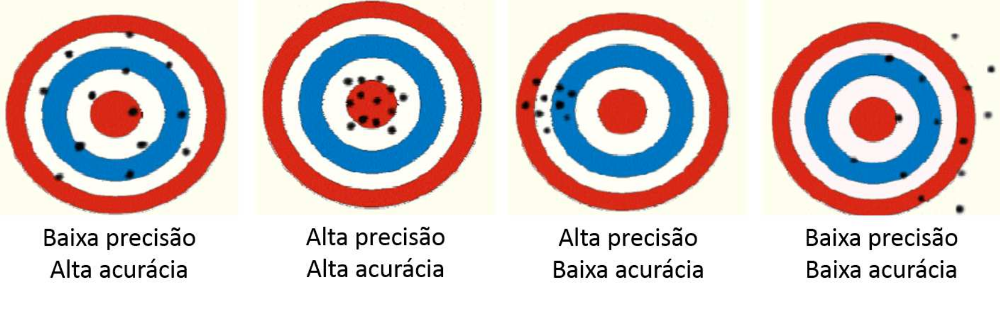
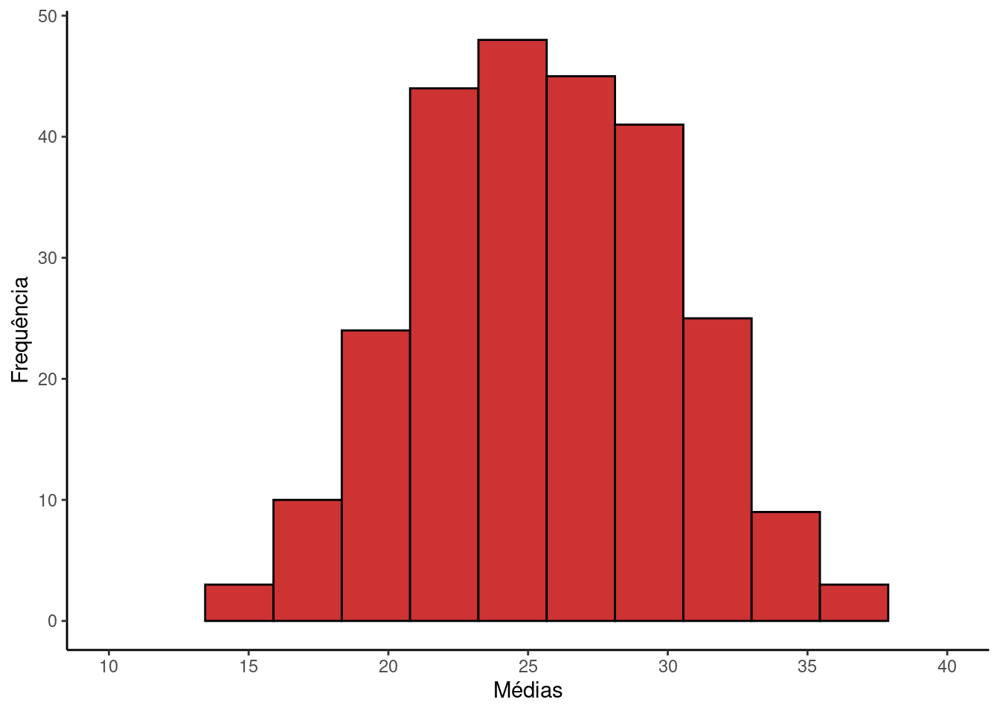
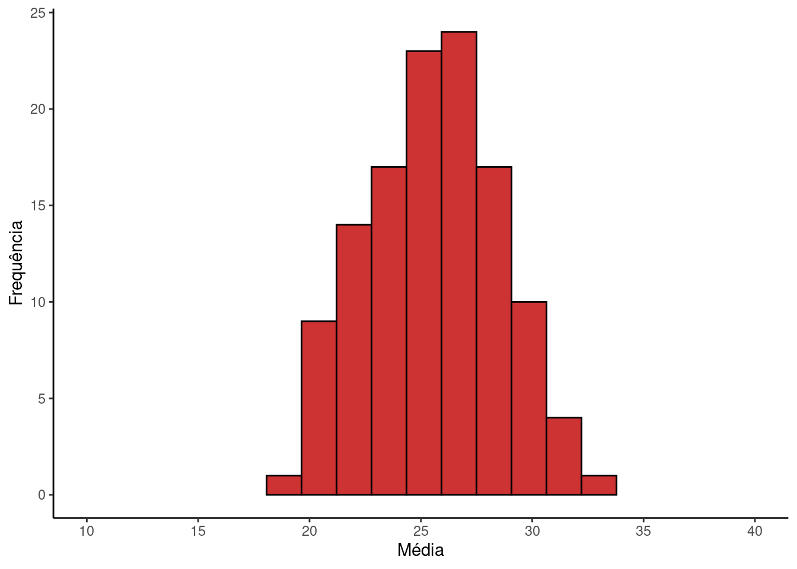

library(tidyverse)
library(patchwork)
library(flextable)
library(knitr)2 Amostrando uma População Estatística
Pacotes, funções e base de dados utilizadas no capítulo
Pacotes:
Como discutimos no Capítulo 1 o objetivo da amostragem é descrever características da população estatística por meio de características da amostra. Por exemplo, em um estudo sobre o tamanho do pescado em uma área de pesca, a população estatística são os comprimentos de todos os peixes que podem ser pescados na região. A população estatística pode ser descrita por parâmetros que representam medidas de centro como o comprimento médio (\(\mu\)), ou por medidas de variação como o desvio padrão (\(\sigma\)), que representam o grau de dispersão das unidades amostrais ao redor da média. Se amostramos n elementos desta população, a média amostral (\(\overline{X}\)) e o desvio padrão amostral (\(s\)) dos diâmetros serão os estimadores destas características.
Dependendo da questão envolvida e do conhecimento prévio sobre a população, diferentes métodos de amostragem são apropriados. A teoria da amostragem é a área da ciência que estuda estes métodos. Neste capítulo vamos discutir três tipos de amostragem: aleatória simples, estratificada e sistemática.
2.1 Amostragem aleatória simples
É aquela em que cada elemento da população tem a mesma probabilidade de ser selecionado para compor a amostra. Se a população consiste de \(1000\) elementos, cada um terá uma probabilidade de \(\frac{1}{1000}\) de ser escolhido. Isto isenta o pesquisador de tomar qualquer decisão com base em julgamentos pré-concebidos, sobre quais elementos devem ou não compor a amostra.
Code
set.seed(1)
pop = c(3, 10, 14, 19, 27, 28, 29, 41, 42, 43)
N = length(pop)
Am1 = sort(pop)[1:5]
set.seed(2)
Am2 = sample(pop, size = 5, replace = F)Suponha uma população hipotética de somente \(10\) elementos:
População: 3, 10, 14, 19, 27, 28, 29, 41, 42, 43
Em uma amostra aleatória simples de cinco elementos, qualquer combinação destes \(10\) elementos é igualmente provável. Se por puro acaso sortearmos uma amostra aleatória contendo os cinco menores valores da população:
Amostra 1: 3, 10, 14, 19, 27
A amostra seria tão aleatória e válida do ponto de vista estatístico quanto qualquer outra como:
Amostra 2: 27, 28, 42, 3, 43
Isto significa que uma amostra aleatória pode não ser necessariamente representativa da população. Amostras pequenas por exemplo, têm uma chance maior de selecionar apenas valores extremos, ou seja, os maiores ou menores elementos da população. A média amostral (\(\overline{X}\)) calculada para estas amostras estará distante da média populacional (\(\mu\)). No entanto, a importância central da amostragem aleatória em estatística está no fato de que a aleatoriedade produz, em média, amostras representativas da população. Deste modo, é esperado que na maioria das vezes, uma amostra aleatória gere médias amostrais próximas à média populacional. Por este motivo, é fundamental prezar pela aleatoriedade no processo amostral, pois de outro modo não poderemos garantir que a inferência seja válida com base nas leis de probabilidade.
O modo mais direto de se obter uma amostra aleatória é por meio de sorteio. Após atribuir números de 1 a \(N\) a cada unidade amostral, estas unidades são sorteadas até que seja atingido o tamanho \(n\) desejado. Na prática, nem sempre é simples, ou mesmo possível obter uma amostra aleatória nestes moldes. Não seria possível enumerar todos os peixes de uma região para, após um sorteio, tomar as medidas somente dequeles selecionados. Entretanto, se empregarmos métodos de captura em que indivíduos de todos os tamanhos sejam igualmente sujeitos a serem capturados poderíamos no aproximar do que seria uma amostra verdsadeiramente aleatória. Outras dificuldades práticas surgiriam neste estudo como por exemplo: garantir acesso irrestrito à toda a área de ocorrência da espécie, tempo disponível para percorrer a toda região. Questões como estas não desmerecem o requisito básico de se obter uma amostra aleatória, mas devem nos auxiliar a decidir como conciliar a prática experimental com a necessidade de garantirmos uma amostra aleatória.
2.2 Amostragem aleatória estratificada
Se tivermos algum conhecimento prévio de como a população está estruturada, a amostra aleatória simples, embora não esteja incorreta, pode não ser a estratégia mais eficiente do ponto de vista estatístico. Se for possivel identificar estratos ou subgrupos dentro da população, podemos conduzir uma amostragem aleatória estatificada.
Voltemos ao exemplo do comprimento do pescado. Suponha que existam duas áreas de ocorrência da espécie. Uma delas sujeita a intensa atividade pesqueira e outra sendo uma área protegida. Poderíamos supor que na área protegida estejam os maiores indivíduos, justamente porque nesta área não há atividade de pesca (que em geral busca indivíduos maiores). Dizemos que os comprimentos em cada uma das duas regiões compõem estratos da população estatística.
Nesta situação, uma amostra puramente aleatória sem considerar a existência dos dois estratos pode fazer com que, puramente ao acaso, um deles se torne mais representados na amostra. Se por exemplo da maioria dos pontos selecionados estiverem na região intensamente pescada, o comprimento médio da amostra (\(\overline{X}\)) tenderá a ficar consistentemente abaixo de \(\mu\). A chance disto ocorrer se torna maior principalmente se o tamanho amostral for pequeno.
Entretanto, se a seleção dos indivíduos foi feita por meio de sorteio, o simples fato de observarmos este padrão não seria por si só justificativa para refarzermos a amostra. O ponto relevante aqui é que em uma amostra aleatória simples, estes extremos indesejáveis (um estrato mais representado que outro) são mais prováveis de acontecer.
Se temos conhecimento da existência dos dois estratos portanto, a amostragem aleatória estratificada seria a mais indicada. Neste tipo de amostragem, o esforço amostral é subdividido entre os estratos. O tamanho amostral em cada estrato será o mesmo, ou proporcional ao seu tamanho. Uma vez definirmos os tamanhos amostrais que será aplicado aos estratos, as unidades são selecionadas por meio de uma amostragem aleatória simples em cada um.
A amostragem aleatória estratificada garante que todos os estratos estejam presentes na amostra conforme sua representatividade na população. Ao fazer isto, as estimativas da amostra tenderão a se concentrar mais próximas ao parâmetro da população. Deste modo, quando os estratos são identificados corretamente, a principal vantagem da amostra aleatória estratificada sobre a amostra aleatória simples está em aumentar a precisão das estimativas. Mais a frente iremos discutir os conceitos de precisão e acurácia e relacioná-los com as estratégias amostrais discutidas aqui.
2.3 Amostragem sistemática
Em uma amostragem sistemática o pesquisador escolhe um elemento inicial e toma medidas a cada \(k\) ocorrências, seguindo a ordem de observação. No caso do comprimento de pescado, para facilitar a tomada de dados, o pesquisador pode medir o primeiro peixe coletado e, em seguida, medir os peixes em intervalos regulares, por exemplo a cada \(10\) observados.
A escolha da amostragem sistemática ao invés de uma amostragem aleatória simples, deve-se à sua praticidade. Se a característica de interesse das unidades amostrais estiver disposta de forma aleatória ao longo da sequência escolhida, a amostragem aleatória e sistemática irão gerar resultados similares. Na maioria dos casos, é isto que o pesquisador assume (ainda que implicitamente) quando opta por uma amostragem sistemática.
2.4 Erro amostral, acurácia e precisão
Como as estimativas são obtidas de um subconjunto da população (a amostra), é regra que o resultado obtido de uma amostra aleatória particular, não será igual ao verdadeiro valor da população (o parâmetro), embora exista uma grande probabilidade estar próximo.
- Erro amostral: é a diferença entre uma estimativa em particular e o parâmetro na população e portanto, é inerente à variabilidade do processo de amostragem. Suponha que, puramente ao acaso, a amostra inclua os menores elementos da população. A média amostral (\(\overline{X}\)) estará muito abaixo da média populacional (\(\mu\)) e o erro amostral será grande. Se calcularmos a média (\(\overline{X}\)) de uma amostra particular, o erro amostral será dado por:
\[E = \overline{X} - \mu\]
A estatística estuda o comportamento probabilístico dos erros amostrais. Existe também o erro não amostral que decorre de equívocos de amostragem, inexperiência do amostrador, falha de equipamentos, enganos no cômputo dos resultados, etc. A estatística não lida com este tipo de erro.
- Acurácia: se refere à proximidade entre o parâmetro e o estimador. Um estimador acurado é, em média, igual ao parâmetro populacional. Diferente do erro amostral, a acurácia não se refere a uma estimativa em particular, mas ao valor esperado do estimador, caso a amostragem fosse repetida um grande número de vezes. Um estimador não-acurado (viciado) resulta em valores consistentemente diferentes do parâmetro, podendo estar acima (viés positivo) ou abaixo (viés negativo) do valor populacional. A média aritmética amostral (\(\overline{X}\)) é um estimador não-viciado da média populacional (\(\mu\)) pois:
\[\mu_{\overline{X}} = \mu\]
- Precisão: tem relação com a variabilidade do estimador. Estimadores que geram estimativas similares entre si são mais precisos. Porém, se as estimativas estiverem distantes de sua média, o estimador é dito pouco preciso. Exemplo: Para uma população normalmente distribuída, tanto a média aritmética quanto a mediana são estimadores acurados. Entretanto, a variância da mediana é maior que da média aritmética. Dizemos portanto, que a média aritmética é um estimador mais preciso que a mediana. A precisão de um estimador é medida pelo erro padrão da média.
\[\sigma_{\overline{X}} =\frac{\sigma}{\sqrt{n}}\]
A figura abaixo é comnmente utilizada para representar os conceitos de precição e acurácia. O centro do alvo é o valor do parâmetro populacional e os pontos em preto são as estimativas. Estimadores acurados geram, em média, estimativas ao redor do parâmetro populacional (viés \(= 0\)). Estimadores não-acurados geram, em média, valores deslocados do parâmetro populacional (viés \(\ne 0\)). Estimadores precisos resultam sempre em estimativas próximas entre si, enquanto estimadores não precisos resultam em estimativas distantes umas das outras.

2.4.1 Erro amostral
Voltemos à nossa população fictícia com \(N = 10\) elementos:
População: 3, 10, 14, 19, 27, 28, 29, 41, 42, 43
Para esta população em particular nós conhecemos a média populacional (\(\mu\) = 25.6), de modo que será possível compará-la com as estimativas amostrais.
Code
set.seed(4)
n = 5
Am1 = sample(pop, size = n, replace = F)
somaAm1 = paste(Am1, collapse = "+")
mp = round(mean(pop),1)
mAm1 = round(mean(Am1),1)
E1 = mAm1 - mpVamos tomar uma amostra aleatória de tamanho \(n = 5\):
Amostra 1: \(41, 14, 42, 29, 19\)
Para esta amostra, a média vale: \(\overline{X} =\frac{41+14+42+29+19}{5} = 29\).
Os valores \(\mu = 25.6\) e \(\overline{X} = 29\) não são idênticos, pois a amostra contém somente alguns elementos da população. A diferença entre \(\mu\) e \(\overline{X}\) é o chamamos de erro amostral.
Neste caso, o erro amostral é:
Erro amostral 1: \(E_1 = 29 - 25.6 = 3.4\)
Se tomarmos outra amostra aleatória, teremos outro conjunto de unidades amostrais, e consequentemente, um \(\overline{X}\) e um erro amostral diferentes. Por exemplo:
Code
set.seed(3)
n = 5
Am2 = sample(pop, size = n, replace = F)
mAm2 = round(mean(Am2),1)
E2 = mAm2 - mpAmostra 2: \(27, 29, 19, 10, 14\)
Média amostral 2: \(\overline{X_2} = 19.8\)
Erro amostral 2: \(E_2 = 19.8 - 25.6 = -5.8\)
2.4.2 Acurácia
Code
N = length(pop)
n = 5
CT = choose(N,n)Até agora, analisamos duas amostras diferentes da população. Porém, quantas amostras distintas seriam possíveis? Para uma amostragem sem reposição, a teoria combinatória nos diz que são possíveis:
\[{{10}\choose{5}} = \frac{10!}{(10-5)! \times 5!} = 252\]
formas diferentes de combinarmos \(N = 10\) elementos em amostras de tamanho \(n = 5\).
Code
set.seed(8)
R = 8
A15 = replicate(n = R, sample(pop, size = n, replace = F))
colnames(A15) = paste("A", 1:ncol(A15), sep = "")
Medias = round(apply(A15, 2, mean),2)Inicialmente vamos avaliar a questão com um número menor. Sejam por exemplo, 8 amostras tomadas aleatoriamente, gerando os resultados a seguir:
Code
A15 %>%
as.data.frame() %>%
add_column('Obs' = rep('', times = nrow(A15)),.before = 'A1') %>%
rbind(Obs = c('Médias', Medias)) %>%
flextable() %>%
bg(i = ~ Obs == 'Médias', bg = 'lightblue') %>%
width(width = 1.5)Obs | A1 | A2 | A3 | A4 | A5 | A6 | A7 | A8 |
|---|---|---|---|---|---|---|---|---|
19 | 29 | 10 | 19 | 42 | 29 | 28 | 43 | |
29 | 43 | 14 | 41 | 29 | 10 | 42 | 28 | |
10 | 28 | 42 | 43 | 41 | 27 | 10 | 42 | |
42 | 3 | 28 | 28 | 14 | 42 | 43 | 27 | |
43 | 27 | 29 | 3 | 28 | 43 | 27 | 19 | |
Médias | 28.6 | 26 | 24.6 | 26.8 | 30.8 | 30.2 | 30 | 31.8 |
Cada coluna desta matriz corresponde a uma possível amostra aleatória e suas respectivas médias.
Algumas amostras tiveram médias muito distantes de \(\mu\), como: \(\overline{X_{A8}} = 31.8\) ou \(\overline{X_{A3}} = 24.6\). Esta variação é natural do processo amostral. Os métodos de amostragem e de inferência estatística tratam justamente de como interpretar e como lidar com esta variação. Para entender melhor este processo, vamos obter todas as 252 combinações possíveis de amostras com \(n = 5\) e, em seguida, extrair suas respectivas médias.
Os resultados das 252 médias possíveis podem ser vistos a seguir ordenados da menor para a maior média possível:
Code
Allcomb = combn(x = pop, m = 5)
M_Allcomb = apply(Allcomb,2,mean)
M_Allcomb_round = round(M_Allcomb,1)
knitr::kable(matrix(M_Allcomb_round,nc = 14, byrow = T))| 14.6 | 14.8 | 15.0 | 17.4 | 17.6 | 17.8 | 16.4 | 16.6 | 19.0 | 19.2 | 19.4 | 16.8 | 19.2 | 19.4 |
| 19.6 | 19.4 | 19.6 | 19.8 | 22.0 | 22.2 | 22.4 | 17.4 | 17.6 | 20.0 | 20.2 | 20.4 | 17.8 | 20.2 |
| 20.4 | 20.6 | 20.4 | 20.6 | 20.8 | 23.0 | 23.2 | 23.4 | 19.4 | 21.8 | 22.0 | 22.2 | 22.0 | 22.2 |
| 22.4 | 24.6 | 24.8 | 25.0 | 22.2 | 22.4 | 22.6 | 24.8 | 25.0 | 25.2 | 25.0 | 25.2 | 25.4 | 27.8 |
| 18.2 | 18.4 | 20.8 | 21.0 | 21.2 | 18.6 | 21.0 | 21.2 | 21.4 | 21.2 | 21.4 | 21.6 | 23.8 | 24.0 |
| 24.2 | 20.2 | 22.6 | 22.8 | 23.0 | 22.8 | 23.0 | 23.2 | 25.4 | 25.6 | 25.8 | 23.0 | 23.2 | 23.4 |
| 25.6 | 25.8 | 26.0 | 25.8 | 26.0 | 26.2 | 28.6 | 21.2 | 23.6 | 23.8 | 24.0 | 23.8 | 24.0 | 24.2 |
| 26.4 | 26.6 | 26.8 | 24.0 | 24.2 | 24.4 | 26.6 | 26.8 | 27.0 | 26.8 | 27.0 | 27.2 | 29.6 | 25.6 |
| 25.8 | 26.0 | 28.2 | 28.4 | 28.6 | 28.4 | 28.6 | 28.8 | 31.2 | 28.6 | 28.8 | 29.0 | 31.4 | 31.6 |
| 19.6 | 19.8 | 22.2 | 22.4 | 22.6 | 20.0 | 22.4 | 22.6 | 22.8 | 22.6 | 22.8 | 23.0 | 25.2 | 25.4 |
| 25.6 | 21.6 | 24.0 | 24.2 | 24.4 | 24.2 | 24.4 | 24.6 | 26.8 | 27.0 | 27.2 | 24.4 | 24.6 | 24.8 |
| 27.0 | 27.2 | 27.4 | 27.2 | 27.4 | 27.6 | 30.0 | 22.6 | 25.0 | 25.2 | 25.4 | 25.2 | 25.4 | 25.6 |
| 27.8 | 28.0 | 28.2 | 25.4 | 25.6 | 25.8 | 28.0 | 28.2 | 28.4 | 28.2 | 28.4 | 28.6 | 31.0 | 27.0 |
| 27.2 | 27.4 | 29.6 | 29.8 | 30.0 | 29.8 | 30.0 | 30.2 | 32.6 | 30.0 | 30.2 | 30.4 | 32.8 | 33.0 |
| 23.4 | 25.8 | 26.0 | 26.2 | 26.0 | 26.2 | 26.4 | 28.6 | 28.8 | 29.0 | 26.2 | 26.4 | 26.6 | 28.8 |
| 29.0 | 29.2 | 29.0 | 29.2 | 29.4 | 31.8 | 27.8 | 28.0 | 28.2 | 30.4 | 30.6 | 30.8 | 30.6 | 30.8 |
| 31.0 | 33.4 | 30.8 | 31.0 | 31.2 | 33.6 | 33.8 | 28.8 | 29.0 | 29.2 | 31.4 | 31.6 | 31.8 | 31.6 |
| 31.8 | 32.0 | 34.4 | 31.8 | 32.0 | 32.2 | 34.6 | 34.8 | 33.4 | 33.6 | 33.8 | 36.2 | 36.4 | 36.6 |
A menor e maior médias possíveis são 14.6 e 36.6 respectivamente. Estes valores são os mais distantes do parâmetro populacional (\(\mu = 25.6\)) e ocorrem puramente ao acaso quanto são amostrados os 5 menores (3, 10, 14, 19, 27) ou os 5 maiores (43, 42, 41, 29, 28) elementos da população estatística. Estes casos extremos são raros. Em nosso exemplo, valores superiores a 33.8 ou inferiores a 17.4 são muito improváveis.
Podemos avaliar graficamente a distribuição das médias amostrais através de um histograma. A grande maioria das médias amostrais concentra-se na porção intermediária do gráfico entre estes limites. Por exemplo, somente 3.2% das observações estão acima de 33.8. Da mesma forma, somente 3.2% das observações estão abaixo de 17.4
Code
M_Allcomb_df = data.frame(M = as.numeric(M_Allcomb))
gp5 <- ggplot(M_Allcomb_df, aes(x = M)) +
geom_histogram(fill = 'brown3', color = 'black', bins = 10) +
scale_x_continuous(breaks = seq(0, 50, by = 5)) +
coord_cartesian(xlim = c(10, 40)) +
labs(x = "Médias",
y = "Frequência") +
theme_classic()
gp5
Se calcularmos a média das médias (\(\mu_{\overline{X}}\)), ou seja, somarmos todos estes valores e dividirmos por 252, o resultado será 25.6, que é exatamente o valor da média populacional \(\mu\). Isto têm uma implicação central em inferência estatística. Significa que a média amostral \(\overline{X}\) é um estimador acurado (= não-viciado), pois tende a estimar corretamente o valor da média populacional \(\mu\). Ou seja, o histograma acima está centrado ao redor de \(\mu\), o que significa que em média uma amostra particular tem maior probabilidade de expressar um \(\overline{X}\) próximo ao valor populacional.
2.4.3 Precisão: o erro padrão da média (\(\sigma_{\overline{X}}\))
Code
n2 = 7
Allcomb7 = combn(x = pop, m = n2)
M_Allcomb7 = apply(Allcomb7,2,mean)
M_Allcomb7_round = round(M_Allcomb7,1)
CT2 = choose(N,n2)Suponha agora que tomemos ao acaso amostras com \(n = 7\) desta mesma população. Existem ao todo:
\[{{10}\choose{7}} = \frac{10!}{(10-7)! \times 7!} = 120\]
amostras diferentes de tamanho \(n = 7\) que podem ser retiradas de uma população de tamanho \(n = 10\). Se tomarmos estas 120 amostras e calcularmos suas respectivas médias amostrais, teremos os resultados abaixo:
Code
knitr::kable(matrix(M_Allcomb7_round,nc = 12, byrow = T))| 18.6 | 20.3 | 20.4 | 20.6 | 20.4 | 20.6 | 20.7 | 22.3 | 22.4 | 22.6 | 20.6 | 20.7 |
| 20.9 | 22.4 | 22.6 | 22.7 | 22.6 | 22.7 | 22.9 | 24.6 | 21.7 | 21.9 | 22.0 | 23.6 |
| 23.7 | 23.9 | 23.7 | 23.9 | 24.0 | 25.7 | 23.9 | 24.0 | 24.1 | 25.9 | 26.0 | 22.4 |
| 22.6 | 22.7 | 24.3 | 24.4 | 24.6 | 24.4 | 24.6 | 24.7 | 26.4 | 24.6 | 24.7 | 24.9 |
| 26.6 | 26.7 | 25.7 | 25.9 | 26.0 | 27.7 | 27.9 | 28.0 | 23.0 | 23.1 | 23.3 | 24.9 |
| 25.0 | 25.1 | 25.0 | 25.1 | 25.3 | 27.0 | 25.1 | 25.3 | 25.4 | 27.1 | 27.3 | 26.3 |
| 26.4 | 26.6 | 28.3 | 28.4 | 28.6 | 27.0 | 27.1 | 27.3 | 29.0 | 29.1 | 29.3 | 30.4 |
| 24.0 | 24.1 | 24.3 | 25.9 | 26.0 | 26.1 | 26.0 | 26.1 | 26.3 | 28.0 | 26.1 | 26.3 |
| 26.4 | 28.1 | 28.3 | 27.3 | 27.4 | 27.6 | 29.3 | 29.4 | 29.6 | 28.0 | 28.1 | 28.3 |
| 30.0 | 30.1 | 30.3 | 31.4 | 28.6 | 28.7 | 28.9 | 30.6 | 30.7 | 30.9 | 32.0 | 32.7 |
Code
M_Allcomb7_df = data.frame(M = as.numeric(M_Allcomb7))
gp7 <- ggplot(M_Allcomb7_df, aes(x = M)) +
geom_histogram(fill = 'brown3', color = 'black', bins = 10) +
scale_x_continuous(breaks = seq(0, 50, by = 5)) +
coord_cartesian(xlim = c(10, 40)) +
labs(x = "Média",
y = "Frequência") +
theme_classic()
gp7
Code
mu_pop = mean(pop)
N = length(pop)
var_pop = mean((pop - mu_pop)^2)
sigma_pop = sqrt(var_pop)
ep5 = sigma_pop/sqrt(n)
ep7 = sigma_pop/sqrt(n2)Se compararmos os histogramas com \(n = 5\) e \(n = 7\) (Figura 2.2 e Figura 2.3), veremos que os dois resultam em estimadores acurados, pois \(\mu_{\overline{X}} = \mu\). No entando, o intervalo de variação é menor para amostras de tamanho \(n = 7\). Para esta figura, os valores estão mais concentrados ao redor da média. Portanto, à medida que aumenta o tamanho amostral, diminui a dispersão das médias amostrais ao redor de \(\mu\). Assim, para amostras grandes torna-se mais improvável obter uma média amostral distante da média populacional. Dizemos então que conforme aumenta o tamanho amostral, conseguimos estimativas mais precisas.
A precisão de um estimador pode ser medida pelo Erro padrão da média (\(\sigma_{\overline{X}}\)) que pode ser calculado por:
\[\sigma_{\overline{X}} = \frac{\sigma}{\sqrt{n}}\]
O erro padrão da média é o desvio padrão de todas as médias amostrais que poderiam ser obtidas de uma amostra com tamanho \(n\). Para nosso exemplo com \(n = 5\), \(\sigma_{\overline{X}}\) = 5.93, enquanto para \(n = 7\), \(\sigma_{\overline{X}}\) = 5.01. Dizemos que o último exemplo fornece estimativas mais precisas.
Erro padrão amostral
Na prática científica não conhecemos o desvio padrão populacional \(\sigma\) e, consequentemente, não temos obter o erro padrão populacional \(\sigma_{\overline{X}}\). No entanto, dado que temos uma amostra particular, podemos estimá-lo a partir do desvio padrão amostral \(\sigma_{\overline{X}}\) pela expressão:
\[s_{\overline{X}} = \frac{s}{\sqrt{n}}\]
em que \(s_{\overline{X}}\) é denominado de erro padrão amostral
Vídeo-aulas